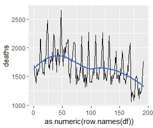

A Collection of ggplot2 Ideas
ggplot2 is an R package, used to create precise and versatile graphics.
ggplot2 is an R package, used to create precise and versatile graphics.
ggplot2 is a package, itself contained within the tidyverse collection of packages. To use it we must first install the tidyverse package.
install.packages("tidyverse")
Once installed, we can then call on the package whenever we need using the following line.
library(tidyverse)
The rows of a dataframe are indexed by numbers 1 2 3 .... We can use UKDriverDeaths
as an example. This data set is a timeseries, so we first need to convert it into a dataframe, so that ggplot2 can process it.
df <- as.data.frame(UKDriverDeaths)
colnames(df) <- 'deaths'
Here, we have converted UKDriverDeaths into a dataframe, and renamed its column to deaths.
If we had more columns, we could assign the column names to a vector containing your chosen names instead.
colnames(df) <- c('name1', 'name2', 'name3', ...)
Calling df, we see a dataframe with only one column, deaths, and the index of each observation on the left.
deaths
1 1687
2 1508
3 1507
4 1385
5 1632
...
191 1737
192 1763
Now ggplot2 will not take the index as an argument without some slight manipulation
We first create a vector containing the row names of the dataframe, and then make all elements of the resulting vector numeric.
as.numeric(row.names(df))
We can now apply this in a basic ggplot2 graph.
ggplot(data=df, mapping=aes(x=as.numeric(row.names(df)), y=deaths)) +
geom_line() +
geom_smooth(se=FALSE)

The original timeseries contained observations of data from every month for 16 years, starting in 1969. Thus, the x-axis of our graph
now represents the number of months after this starting date, and the y-axis represents the number of UK drivers killed or seriously injured that month.